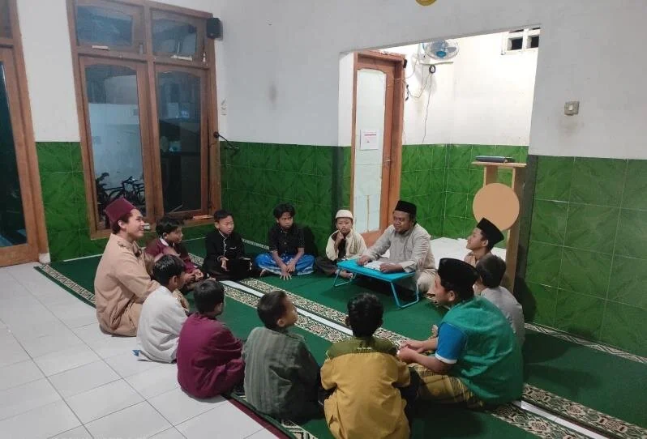

Materi Utama
- Struktur Halaman HTML dengan Semantik
- Tampilan Dasar Dengan CSS
- Publikasi Situs Dengan Git dan GitHub Pages
Susunan Acara

| Sesi | Waktu | Ruang |
|---|---|---|
| HTML Semantik | 09.00 - 11.00 | Aula B1 |
| CSS Dasar | 11.00-13.00 | Aula B1 |
| Git Dan Publikasi | 13.00 - 15.00 | Lab Komputer 2 |